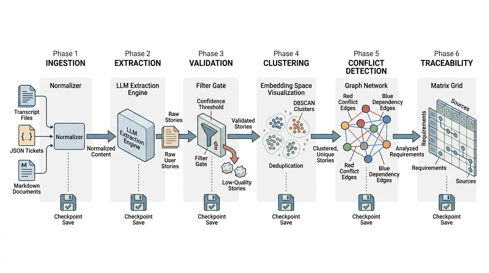

Prerequisites
This section synthesizes all the components from the chapter. You should have worked through Section 13.1 (data structures: user stories, use cases, acceptance criteria, traceability matrix) and Section 13.2 (extraction pipeline: LLM extraction, clustering, conflict detection). We also draw on the Model Context Protocol (MCP) server patterns from Chapter 12 to expose the assistant as a tool that other agents can invoke.
The previous two sections built the individual components: structured requirement models, large language model (LLM) based extraction, embedding clustering, and graph-based conflict detection. This section assembles them into a Requirement Discovery Assistant, a complete tool that a requirements engineer operates in practice. The assistant accepts a folder of transcripts (or a stream of tickets from an issue tracker), runs the full extraction pipeline, produces a visual conflict map, generates a coverage dashboard, and exports the results in formats consumable by downstream tools. It becomes the first domain-specific component of the Discovery Workbench built from software engineering primitives, joining the MCP servers from Chapter 12 and feeding into the architecture discovery pipeline of Chapter 14. Figure 13.3.1 illustrates the six-phase requirement discovery pipeline architecture.

1. Architecture of the Assistant
When requirement conflicts go undetected, they surface months later as contradictory features that force costly rework or, worse, ship to users who encounter mutually exclusive behaviors. The faster a team can surface and reconcile those conflicts, the cheaper they are to resolve.
What happens when you hand 42,000 words of stakeholder transcripts, 200 issue-tracker tickets, and a regulatory guidance document to a single tool and press "run"? The answer is typically a validated, deduplicated requirement set with conflicts flagged and coverage gaps highlighted, produced in under ten minutes on a corpus of this size. The assistant that delivers this result follows the layered architecture pattern from Chapter 6, separating concerns into three layers:
A Requirement Discovery Assistant is a software pipeline that reads unstructured stakeholder inputs: meeting transcripts, issue tracker tickets, and design documents. It applies LLM-based extraction and semantic analysis to identify, validate, cluster, and cross-check requirements. It then outputs structured artifacts such as user stories, conflict reports, and traceability matrices. Manual requirement analysis at scale is slow and error-prone. A single analyst reviewing 40,000 words of transcripts can miss implicit requirements, overlook contradictions between stakeholder groups, and produce inconsistent formatting. The assistant chains a sequence of phases: ingestion, extraction, validation, clustering, conflict detection, and traceability linking. Each phase transforms the data into a progressively more structured form and saves checkpoints for recovery. Use this pipeline approach when you have more than a handful of sources or when multiple stakeholder roles contribute conflicting requirements. For a single, short requirements document with one stakeholder, a manual review with an LLM chat session suffices. In short: the assistant is an assembly line for requirements: ingest, extract, validate, cluster, reconcile, trace.
- Ingestion layer: reads transcripts, tickets, and documents from various sources (local files, Jira API, Confluence, Slack exports) and normalizes them into plain-text chunks with source metadata.
- Analysis layer: runs the extraction pipeline from Section 13.2 (extract, validate, cluster, deduplicate, detect conflicts) and produces the structured requirement set with the traceability matrix.
- Presentation layer: generates reports, visualizations, and machine-readable exports (JavaScript Object Notation (JSON), comma-separated values (CSV), Gherkin feature files (plain-text specifications written in Given/When/Then format for behavior-driven development test frameworks)) for consumption by humans and downstream tools.
Figure 13.3 shows how these three layers connect. Sources flow into the ingestion layer, which normalizes them into plain-text chunks. The analysis layer runs five sequential phases (extract, validate, cluster, detect conflicts, trace), saving a checkpoint after each phase so a failed run can resume. The presentation layer consumes the structured output and generates the four export formats.
from pathlib import Path
from dataclasses import dataclass, field
from datetime import datetime
import json
@dataclass
class IngestionSource:
"""Metadata for a single ingested document."""
source_id: str
source_type: str # "transcript", "ticket", "document", "slack"
original_path: str
ingested_at: datetime
word_count: int
speaker_count: int = 0 # For transcripts
@dataclass
class DiscoverySession:
"""A complete requirement discovery session with all artifacts."""
session_id: str
created_at: datetime
sources: list[IngestionSource] = field(default_factory=list)
stories: list[ExtractedStory] = field(default_factory=list)
conflicts: list[Conflict] = field(default_factory=list)
coverage: dict[str, dict[str, int]] = field(default_factory=dict)
validation_reports: list[ValidationReport] = field(default_factory=list)
@property
def summary(self) -> dict:
"""Compute session summary statistics."""
return {
"sources": len(self.sources),
"total_words": sum(s.word_count for s in self.sources),
"stories_extracted": len(self.stories),
"conflicts_detected": len(self.conflicts),
"high_severity_conflicts": sum(
1 for c in self.conflicts if c.severity == "high"
),
"validation_pass_rate": (
sum(1 for r in self.validation_reports if r.is_clean)
/ max(len(self.validation_reports), 1)
),
}
DiscoverySession bundles all artifacts from one run: sources, extracted stories, conflicts, coverage metrics, and validation reports.2. The Ingestion Layer
Real-world requirement sources come in many formats. Meeting transcripts arrive as plain text (from Otter.ai, Whisper, or manual transcription). Issue tracker tickets come as structured JSON from Jira or Linear APIs. Documentation lives in Confluence pages, Google Docs, or Markdown files. The ingestion layer normalizes all of these into a common format: plain text with source metadata.
import re
class TranscriptParser:
"""Parse meeting transcripts into speaker-attributed segments."""
# Common transcript formats:
# "Speaker Name: text..."
# "[00:01:23] Speaker Name: text..."
# "Speaker Name (00:01:23): text..."
SPEAKER_PATTERN = re.compile(
r'(?:\[[\d:]+\]\s*)?' # Optional timestamp in brackets
r'([A-Z][a-zA-Z\s]+?)' # Speaker name (capitalized)
r'(?:\s*\([\d:]+\))?\s*' # Optional timestamp in parens
r':\s*' # Colon separator
r'(.+)' # Spoken text
)
def parse(self, text: str) -> list[dict[str, str]]:
"""Parse a transcript into speaker-attributed segments.
Returns list of {"speaker": name, "text": content} dicts.
"""
segments = []
current_speaker = "Unknown"
current_text = []
for line in text.split("\n"):
line = line.strip()
if not line:
continue
match = self.SPEAKER_PATTERN.match(line)
if match:
# Save previous segment
if current_text:
segments.append({
"speaker": current_speaker,
"text": " ".join(current_text),
})
current_speaker = match.group(1).strip()
current_text = [match.group(2).strip()]
else:
# Continuation of current speaker
current_text.append(line)
# Save last segment
if current_text:
segments.append({
"speaker": current_speaker,
"text": " ".join(current_text),
})
return segments
def extract_speakers(self, segments: list[dict]) -> list[str]:
"""Get unique speaker names from parsed segments."""
return sorted(set(s["speaker"] for s in segments))
def to_plain_text(self, segments: list[dict]) -> str:
"""Convert back to plain text, preserving speaker attribution."""
return "\n\n".join(
f"{s['speaker']}: {s['text']}" for s in segments
)
class TicketParser:
"""Parse issue tracker tickets (Jira-style JSON) into requirement text."""
def parse(self, ticket_json: dict) -> str:
"""Extract requirement-relevant text from a ticket.
Combines title, description, and acceptance criteria fields.
"""
parts = []
title = ticket_json.get("summary", "")
if title:
parts.append(f"Title: {title}")
description = ticket_json.get("description", "")
if description:
parts.append(f"Description: {description}")
# Jira custom fields for acceptance criteria
ac = ticket_json.get("customfield_acceptance_criteria", "")
if ac:
parts.append(f"Acceptance Criteria: {ac}")
# Comments often contain clarifications
comments = ticket_json.get("comments", [])
for comment in comments[:5]: # Limit to first 5 comments
author = comment.get("author", "Unknown")
body = comment.get("body", "")
if body:
parts.append(f"Comment by {author}: {body}")
reporter = ticket_json.get("reporter", "Unknown")
priority = ticket_json.get("priority", "Medium")
header = f"[Ticket by {reporter}, Priority: {priority}]"
return f"{header}\n" + "\n\n".join(parts)
def ingest_directory(
source_dir: Path,
) -> tuple[list[IngestionSource], dict[str, str]]:
"""Ingest all supported files from a directory.
Supports: .txt (transcripts), .json (tickets), .md (documents).
Returns:
Tuple of (source_metadata_list, {source_id: plain_text}).
"""
sources = []
texts = {}
parser = TranscriptParser()
for path in sorted(source_dir.iterdir()):
if path.suffix == ".txt":
text = path.read_text(encoding="utf-8")
segments = parser.parse(text)
sources.append(IngestionSource(
source_id=path.stem,
source_type="transcript",
original_path=str(path),
ingested_at=datetime.now(),
word_count=len(text.split()),
speaker_count=len(parser.extract_speakers(segments)),
))
texts[path.stem] = text
elif path.suffix == ".json":
raw = json.loads(path.read_text(encoding="utf-8"))
ticket_parser = TicketParser()
# Handle single ticket or array of tickets
tickets = raw if isinstance(raw, list) else [raw]
for i, ticket in enumerate(tickets):
source_id = f"{path.stem}-{i}"
text = ticket_parser.parse(ticket)
sources.append(IngestionSource(
source_id=source_id,
source_type="ticket",
original_path=str(path),
ingested_at=datetime.now(),
word_count=len(text.split()),
))
texts[source_id] = text
elif path.suffix == ".md":
text = path.read_text(encoding="utf-8")
sources.append(IngestionSource(
source_id=path.stem,
source_type="document",
original_path=str(path),
ingested_at=datetime.now(),
word_count=len(text.split()),
))
texts[path.stem] = text
print(f"Ingested {len(sources)} sources "
f"({sum(s.word_count for s in sources)} words)")
return sources, texts
TranscriptParser handles common transcript formats with optional timestamps and speaker labels.With all sources normalized into plain text and tagged with metadata, the next question is how to coordinate the extraction, validation, and conflict-detection steps into a reliable, recoverable pipeline.
3. The Analysis Orchestrator
The analysis orchestrator coordinates the pipeline from Section 13.2, adding session management, progress tracking, and error recovery. The clustering phase uses DBSCAN (Density-Based Spatial Clustering of Applications with Noise), a clustering algorithm that groups nearby points by density without requiring a predefined number of clusters, controlled by an epsilon parameter that sets the maximum neighbor distance. A smaller epsilon groups only very similar requirements together (risking under-merging), while a larger epsilon merges broader clusters (risking over-merging of distinct requirements). The conflict detection phase then uses cosine similarity (a measure of the angle between two embedding vectors, where 1.0 means identical direction and 0.0 means unrelated) to identify requirement pairs that are topically close yet potentially contradictory. In production, each step can fail independently (an LLM call might time out, an embedding batch might exceed rate limits), so the orchestrator saves intermediate results after each phase.
Common Misconception
A frequent misconception is that the Requirement Discovery Assistant replaces human judgment in requirements engineering, producing a final, authoritative requirement set that can be handed directly to developers. In reality, the assistant is a triage and drafting tool: it surfaces candidate requirements, flags likely conflicts, and highlights coverage gaps, but every output still requires human review, prioritization, and stakeholder sign-off before it becomes an accepted requirement.
from enum import Enum
class PipelinePhase(str, Enum):
"""Phases of the requirement discovery pipeline."""
INGESTION = "ingestion"
EXTRACTION = "extraction"
VALIDATION = "validation"
CLUSTERING = "clustering"
CONFLICT_DETECTION = "conflict_detection"
TRACEABILITY = "traceability"
COMPLETE = "complete"
class RequirementDiscoveryAssistant:
"""The complete Requirement Discovery Assistant.
Orchestrates the full pipeline from raw sources to
validated, conflict-checked requirements with traceability.
"""
def __init__(
self,
client: Anthropic,
model: str = "claude-sonnet-4-20250514",
embedding_model: str = "voyage-3",
output_dir: Path = Path("./discovery_output"),
):
self.client = client
self.model = model
self.embedding_model = embedding_model
self.output_dir = output_dir
self.output_dir.mkdir(parents=True, exist_ok=True)
self.session: DiscoverySession | None = None
def run(
self,
source_dir: Path,
confidence_threshold: float = 0.5,
cluster_eps: float = 0.15,
conflict_similarity: float = 0.5,
) -> DiscoverySession:
"""Execute the full requirement discovery pipeline.
Args:
source_dir: Directory containing source files.
confidence_threshold: Minimum extraction confidence.
cluster_eps: DBSCAN epsilon for deduplication.
conflict_similarity: Cosine threshold for conflict candidates.
Returns:
A DiscoverySession with all artifacts.
"""
session_id = datetime.now().strftime("%Y%m%d-%H%M%S")
self.session = DiscoverySession(
session_id=session_id,
created_at=datetime.now(),
)
# Phase 1: Ingestion
print(f"\n{'='*60}")
print(f"Phase 1: INGESTION")
print(f"{'='*60}")
sources, texts = ingest_directory(source_dir)
self.session.sources = sources
self._save_checkpoint(PipelinePhase.INGESTION)
# Phase 2: Extraction
print(f"\n{'='*60}")
print(f"Phase 2: EXTRACTION")
print(f"{'='*60}")
all_results = []
for source_id, text in texts.items():
print(f" Extracting from {source_id}...")
results = extract_requirements(text, self.client, self.model)
all_results.extend(results)
self._save_checkpoint(PipelinePhase.EXTRACTION)
# Phase 3: Validation
print(f"\n{'='*60}")
print(f"Phase 3: VALIDATION")
print(f"{'='*60}")
clean_stories, reports = filter_and_report(
all_results, min_confidence=confidence_threshold
)
self.session.validation_reports = reports
self._save_checkpoint(PipelinePhase.VALIDATION)
# Phase 4: Clustering and deduplication
print(f"\n{'='*60}")
print(f"Phase 4: CLUSTERING")
print(f"{'='*60}")
if len(clean_stories) >= 2:
embeddings = embed_stories(clean_stories, self.client)
clusters = cluster_requirements(
clean_stories, embeddings, eps=cluster_eps
)
final_stories = []
for label, indices in clusters.items():
if label == -1:
final_stories.extend(
clean_stories[i] for i in indices
)
else:
final_stories.append(
deduplicate_cluster(clean_stories, indices)
)
else:
final_stories = clean_stories
self.session.stories = final_stories
self._save_checkpoint(PipelinePhase.CLUSTERING)
# Phase 5: Conflict detection
print(f"\n{'='*60}")
print(f"Phase 5: CONFLICT DETECTION")
print(f"{'='*60}")
conflict_graph = ConflictGraph()
for i, story in enumerate(final_stories):
conflict_graph.add_requirement(
f"US-{i+1:03d}",
role=story.role,
capability=story.capability,
)
if len(final_stories) >= 2:
final_embeddings = embed_stories(final_stories, self.client)
candidates = find_candidate_conflicts(
final_stories, final_embeddings,
similarity_threshold=conflict_similarity,
)
for idx_a, idx_b, sim in candidates:
id_a, id_b = f"US-{idx_a+1:03d}", f"US-{idx_b+1:03d}"
assessment = assess_conflict(
final_stories[idx_a], final_stories[idx_b],
id_a, id_b, self.client, self.model,
)
if assessment.conflicts:
conflict_graph.add_conflict(
id_a, id_b,
conflict_type=assessment.conflict_type,
severity=assessment.severity,
explanation=assessment.explanation,
resolution_hint=assessment.resolution_hint,
)
self.session.conflicts = conflict_graph.find_direct_conflicts()
self._save_checkpoint(PipelinePhase.CONFLICT_DETECTION)
# Phase 6: Traceability
print(f"\n{'='*60}")
print(f"Phase 6: TRACEABILITY")
print(f"{'='*60}")
matrix = TraceabilityMatrix()
for source in sources:
matrix.add_source(source.source_id, source.source_type)
for i, story in enumerate(final_stories):
req_id = f"US-{i+1:03d}"
full_story = UserStory(
id=req_id,
role=StakeholderRole.RESEARCHER,
capability=story.capability,
benefit=story.benefit,
priority=Priority(story.priority_hint),
source=story.source_quote,
)
matrix.add_story(full_story)
self.session.coverage = matrix.coverage_report()
self._save_checkpoint(PipelinePhase.COMPLETE)
# Generate outputs
self._export_stories(final_stories)
self._export_gherkin(final_stories)
self._export_conflict_report(conflict_graph)
self._export_session_summary()
print(f"\n{'='*60}")
print(f"COMPLETE: {len(final_stories)} requirements, "
f"{len(self.session.conflicts)} conflicts")
print(f"Output: {self.output_dir / session_id}")
print(f"{'='*60}")
return self.session
def _save_checkpoint(self, phase: PipelinePhase) -> None:
"""Save intermediate state for recovery."""
checkpoint_dir = self.output_dir / self.session.session_id
checkpoint_dir.mkdir(parents=True, exist_ok=True)
checkpoint = {
"phase": phase.value,
"timestamp": datetime.now().isoformat(),
"summary": self.session.summary,
}
path = checkpoint_dir / f"checkpoint_{phase.value}.json"
path.write_text(json.dumps(checkpoint, indent=2))
def _export_stories(self, stories: list[ExtractedStory]) -> None:
"""Export stories as JSON for downstream tools."""
out_dir = self.output_dir / self.session.session_id
data = [s.model_dump() for s in stories]
path = out_dir / "requirements.json"
path.write_text(json.dumps(data, indent=2, default=str))
print(f" Exported {len(stories)} stories to {path}")
def _export_gherkin(self, stories: list[ExtractedStory]) -> None:
"""Export as Gherkin feature files for behavior-driven development (BDD) testing."""
out_dir = self.output_dir / self.session.session_id
features_dir = out_dir / "features"
features_dir.mkdir(exist_ok=True)
feature_content = "Feature: Discovered Requirements\n\n"
for i, story in enumerate(stories):
feature_content += (
f" # US-{i+1:03d} (confidence: {story.confidence:.2f})\n"
f" Scenario: {story.capability[:80]}\n"
f" Given the system is in its default state\n"
f" When a {story.role} attempts to {story.capability}\n"
f" Then the system enables {story.benefit}\n\n"
)
path = features_dir / "discovered_requirements.feature"
path.write_text(feature_content)
print(f" Exported Gherkin features to {path}")
def _export_conflict_report(self, cg: ConflictGraph) -> None:
"""Export conflict analysis as a structured report."""
out_dir = self.output_dir / self.session.session_id
report = {
"summary": cg.summary(),
"direct_conflicts": [
{
"req_a": c.req_a,
"req_b": c.req_b,
"type": c.conflict_type,
"severity": c.severity,
"explanation": c.explanation,
"resolution_hint": c.resolution_hint,
}
for c in cg.find_direct_conflicts()
],
"dependency_cycles": cg.find_dependency_cycles(),
"conflict_clusters": [
list(cluster)
for cluster in cg.find_conflict_clusters()
],
}
path = out_dir / "conflict_report.json"
path.write_text(json.dumps(report, indent=2))
print(f" Exported conflict report to {path}")
def _export_session_summary(self) -> None:
"""Export a human-readable session summary."""
out_dir = self.output_dir / self.session.session_id
summary = self.session.summary
lines = [
f"Requirement Discovery Session: {self.session.session_id}",
f"Created: {self.session.created_at.isoformat()}",
f"",
f"Sources: {summary['sources']} "
f"({summary['total_words']} words)",
f"Stories extracted: {summary['stories_extracted']}",
f"Conflicts detected: {summary['conflicts_detected']} "
f"({summary['high_severity_conflicts']} high severity)",
f"Validation pass rate: "
f"{summary['validation_pass_rate']:.0%}",
]
path = out_dir / "session_summary.txt"
path.write_text("\n".join(lines))
print(f" Exported session summary to {path}")
RequirementDiscoveryAssistant class with six pipeline phases, checkpoint recovery, and four export formats (JSON requirements, Gherkin features, conflict report, session summary). Each phase saves intermediate state so a failed run can resume from the last checkpoint.
The checkpoint files enable resumption, but the run method shown above always starts from phase 1. To resume from a failed run, load the most recent checkpoint file from the session directory, deserialize the saved DiscoverySession state, and skip forward to the phase after the last completed checkpoint. In practice, you would add a resume(session_id: str) method that scans the checkpoint directory, identifies the latest completed phase, restores the session object, and re-enters the pipeline at the next phase. This pattern mirrors the write-ahead log strategy used in database recovery: each checkpoint is a consistent snapshot, and replay begins from the last known good state.
A biotech startup preparing for a Series B needed to document requirements for their cell-therapy manufacturing platform. They had 15 stakeholder interview transcripts (totaling 42,000 words), 200 Jira tickets from two years of development, and a regulatory guidance document. The Requirement Discovery Assistant processed all sources in under 8 minutes, extracting 187 raw stories, deduplicating to 94 unique requirements, and flagging 11 conflicts. The most critical conflict was between the manufacturing team's requirement for real-time process adjustments and the quality team's requirement for locked, pre-approved protocols. The resolution hint ("distinguish advisory suggestions from protocol modifications; allow real-time advisory while requiring formal change control for protocol changes") was adopted directly into the system design. Without the assistant, the team estimated this analysis would have taken two analysts three weeks.
4. Visualizing the Requirement Landscape
Numbers and JSON exports serve downstream processing, but human reviewers need visual representations to grasp the requirement landscape at a glance. Two key visualizations address this need: a conflict map showing requirement relationships and tensions, and a coverage heatmap showing which stakeholder roles and system areas are well-covered versus underspecified.
Mental Model
Think of the coverage matrix like a doctor's intake checklist for a new patient. The rows are body systems (cardiovascular, respiratory, neurological) and the columns are question categories (current symptoms, family history, medications). A blank cell does not mean the patient is healthy in that area; it means nobody asked the question yet. Just as a thorough physician scans the checklist for empty cells and follows up before making a diagnosis, the requirements engineer scans the coverage matrix for zero-count cells and schedules targeted elicitation sessions before declaring the requirement set complete. The mechanism is the same: absence of information is treated as an action item, not as evidence of no need.
The conflict map uses Graphviz DOT, a plain-text graph description language in which nodes and edges are declared as short statements and then rendered automatically into a positioned layout by the Graphviz engine. The function below produces a DOT string that any Graphviz-compatible renderer (the dot command-line tool, or a web viewer such as Viz.js) can turn into a visual graph.
import networkx as nx
def generate_conflict_map_dot(
conflict_graph: ConflictGraph,
stories: list[ExtractedStory],
) -> str:
"""Generate a Graphviz DOT representation of the conflict graph.
Nodes are colored by stakeholder role.
Conflict edges are red (high severity) or orange (medium/low).
Dependency edges are blue dashed arrows.
"""
role_colors = {
"researcher": "#4CAF50",
"lab_technician": "#2196F3",
"principal_investigator": "#9C27B0",
"data_engineer": "#FF9800",
"compliance_officer": "#F44336",
"system_administrator": "#607D8B",
}
lines = [
"digraph RequirementConflicts {",
' rankdir=LR;',
' node [shape=box, style="rounded,filled", fontsize=10];',
' edge [fontsize=8];',
"",
]
# Add requirement nodes
for i, story in enumerate(stories):
req_id = f"US-{i+1:03d}"
color = role_colors.get(story.role, "#CCCCCC")
# Truncate capability for display
label = story.capability[:50].replace('"', '\\"')
lines.append(
f' "{req_id}" [label="{req_id}\\n{label}...", '
f'fillcolor="{color}", fontcolor="white"];'
)
lines.append("")
# Add conflict edges
for conflict in conflict_graph.find_direct_conflicts():
color = "#D32F2F" if conflict.severity == "high" else "#FF9800"
label = conflict.conflict_type[:10]
lines.append(
f' "{conflict.req_a}" -> "{conflict.req_b}" '
f'[color="{color}", penwidth=2, dir=none, '
f'label="{label}"];'
)
# Add dependency edges
for u, v in conflict_graph.dep_graph.edges():
lines.append(
f' "{u}" -> "{v}" '
f'[color="#1976D2", style=dashed, label="depends"];'
)
lines.append("}")
return "\n".join(lines)
def generate_coverage_matrix(
stories: list[ExtractedStory],
system_areas: list[str] | None = None,
) -> dict[str, dict[str, int]]:
"""Build a coverage matrix: stakeholder roles x system areas.
Counts how many requirements each role has in each area.
Helps identify blind spots in requirement coverage.
"""
if system_areas is None:
# Infer system areas from story tags or capability keywords
system_areas = [
"data_upload", "analysis", "reporting",
"authentication", "storage", "integration",
"monitoring", "export", "compliance",
]
matrix = {}
for story in stories:
role = story.role
if role not in matrix:
matrix[role] = {area: 0 for area in system_areas}
# Simple keyword matching for area classification
cap_lower = story.capability.lower()
for area in system_areas:
area_keywords = area.replace("_", " ").split()
if any(kw in cap_lower for kw in area_keywords):
matrix[role][area] += 1
return matrix
def print_coverage_heatmap(coverage: dict[str, dict[str, int]]) -> None:
"""Print a text-based coverage heatmap.
Cells with 0 requirements are highlighted as gaps.
"""
if not coverage:
print("No coverage data available.")
return
areas = list(next(iter(coverage.values())).keys())
roles = list(coverage.keys())
# Header
header = f"{'Role':<25}" + "".join(f"{a[:12]:>13}" for a in areas)
print(header)
print("-" * len(header))
for role in roles:
row = f"{role:<25}"
for area in areas:
count = coverage[role][area]
marker = f"{count:>13}" if count > 0 else " [GAP]"
row += marker
print(row)
# Summary: total gaps
total_gaps = sum(
1 for role in roles
for area in areas
if coverage[role][area] == 0
)
total_cells = len(roles) * len(areas)
print(f"\nCoverage: {total_cells - total_gaps}/{total_cells} cells "
f"({100 * (total_cells - total_gaps) / total_cells:.0f}%)")
print(f"Gaps: {total_gaps} (consider targeted elicitation)")
Each zero cell in the coverage matrix is not just a gap; it is a question for the next elicitation round. If the compliance officer has zero requirements related to data export, either the compliance team does not care about exports (unlikely) or nobody asked them about it. The coverage matrix transforms passive gap detection into active elicitation planning, connecting to the active requirement elicitation research discussed in Section 13.2. This same pattern of using gaps to drive the next round of inquiry appears in the Bayesian experiment design framework of Chapter 46.
Visualizations give human reviewers the situational awareness they need, but the assistant becomes far more valuable when other software agents can also consume its outputs programmatically.
5. Exposing the Assistant as an MCP Tool
The Requirement Discovery Assistant becomes far more powerful when it can be invoked by other agents. Following the MCP server patterns from Chapter 12, we expose the assistant's capabilities as MCP tools that the multi-agent teams of Chapter 17 can call. A project-planning agent might invoke the requirement extractor as part of a larger workflow that chains requirements into architecture into implementation.
from mcp.server import Server
from mcp.types import Tool, TextContent
import mcp.server.stdio
server = Server("requirement-discovery")
@server.tool()
async def extract_requirements_from_text(
text: str,
source_id: str = "inline",
confidence_threshold: float = 0.5,
) -> str:
"""Extract structured user stories from unstructured text.
Accepts a transcript, ticket description, or document and
returns a JSON array of extracted user stories with confidence
scores and source quotes.
Args:
text: The unstructured text to analyze.
source_id: Identifier for traceability.
confidence_threshold: Minimum confidence to include (0.0-1.0).
"""
client = Anthropic()
results = extract_requirements(text, client)
clean, reports = filter_and_report(
results, min_confidence=confidence_threshold
)
output = {
"source_id": source_id,
"stories": [s.model_dump() for s in clean],
"ambiguities": [
amb for r in results for amb in r.ambiguities
],
"stats": {
"total_extracted": sum(len(r.stories) for r in results),
"passed_validation": len(clean),
},
}
return json.dumps(output, indent=2, default=str)
@server.tool()
async def check_requirement_conflicts(
requirements_json: str,
) -> str:
"""Check a set of requirements for conflicts.
Accepts a JSON array of requirement objects (each with
'role', 'capability', 'benefit' fields) and returns
detected conflicts with resolution hints.
Args:
requirements_json: JSON array of requirement objects.
"""
requirements = json.loads(requirements_json)
stories = [ExtractedStory(**r) for r in requirements]
client = Anthropic()
embeddings = embed_stories(stories, client)
candidates = find_candidate_conflicts(stories, embeddings)
conflict_graph = ConflictGraph()
for i, story in enumerate(stories):
conflict_graph.add_requirement(
f"US-{i+1:03d}", role=story.role,
capability=story.capability,
)
for idx_a, idx_b, sim in candidates:
id_a, id_b = f"US-{idx_a+1:03d}", f"US-{idx_b+1:03d}"
assessment = assess_conflict(
stories[idx_a], stories[idx_b],
id_a, id_b, client,
)
if assessment.conflicts:
conflict_graph.add_conflict(
id_a, id_b,
conflict_type=assessment.conflict_type,
severity=assessment.severity,
explanation=assessment.explanation,
resolution_hint=assessment.resolution_hint,
)
return json.dumps({
"conflicts": [
{
"req_a": c.req_a, "req_b": c.req_b,
"type": c.conflict_type,
"severity": c.severity,
"explanation": c.explanation,
"resolution_hint": c.resolution_hint,
}
for c in conflict_graph.find_direct_conflicts()
],
"summary": conflict_graph.summary(),
}, indent=2)
@server.tool()
async def generate_acceptance_criteria(
story_json: str,
num_criteria: int = 3,
) -> str:
"""Generate acceptance criteria for a user story.
Takes a user story and produces Given/When/Then acceptance
criteria that can be used directly in BDD test frameworks.
Args:
story_json: JSON object with 'role', 'capability', 'benefit'.
num_criteria: Number of criteria to generate (1-5).
"""
story = json.loads(story_json)
prompt = f"""Generate {num_criteria} acceptance criteria in Given/When/Then format
for this user story:
As a {story['role']}, I want {story['capability']}, so that {story['benefit']}.
Each criterion must:
1. Have a specific, testable 'Then' clause (include numbers, time bounds, or exact outcomes)
2. Cover a different aspect (happy path, error case, edge case)
3. Be independently verifiable
Return a JSON array of objects with 'given', 'when', 'then' fields."""
client = Anthropic()
response = client.messages.create(
model="claude-sonnet-4-20250514",
max_tokens=2048,
messages=[{"role": "user", "content": prompt}],
)
return response.content[0].text
async def main():
"""Run the MCP server over stdio."""
async with mcp.server.stdio.stdio_server() as (read, write):
await server.run(read, write, server.create_initialization_options())
if __name__ == "__main__":
import asyncio
asyncio.run(main())
We assembled the assistant from individual components (extraction, validation, clustering, conflict detection) to show how each piece works. In production, PydanticAI can wrap the entire pipeline into a single agent with structured tool definitions, automatic retry on validation failure, and built-in conversation memory. A PydanticAI agent configured with our Pydantic models as output schemas and the extraction/conflict prompts as system instructions reduces the orchestration code from 200 lines to roughly 40 lines. The trade-off is less visibility into intermediate pipeline stages, which matters during development but is acceptable in production.
6. Integration with the Discovery Workbench
The Requirement Discovery Assistant is the first domain-specific tool in the Discovery Workbench. Its outputs feed directly into two downstream components:
Architecture discovery (Chapter 14): the validated requirement set becomes the input for automated architecture exploration. Each requirement constrains the design space. Non-functional requirements (performance, security, availability) map to architectural quality attributes. Conflicts that could not be resolved at the requirements level become architectural trade-offs that the design must accommodate.
Test generation (Chapter 18): the Gherkin feature files exported by the assistant become the skeleton of the test suite. Each acceptance criterion maps to a test scenario; the traceability matrix ensures that every requirement has corresponding test coverage. When requirements change, the traceability links identify which tests need updating.
Composing Tools into Multi-Agent Workflows
The MCP server interface lets other Discovery Workbench tools compose with the assistant. A project-planning agent might chain four steps: (1) extract requirements from stakeholder transcripts, (2) propose an architecture based on those requirements, (3) build an implementation plan from the architecture, and (4) generate a test plan from the acceptance criteria. Each step is a tool call that produces structured output for the next step. Chapter 17 develops this multi-agent software team pattern in full.
Our assistant operates in batch mode: ingest transcripts, extract, analyze, export. Emerging research explores continuous requirement discovery, where the system monitors ongoing conversations (Slack channels, GitHub issues, customer support tickets) and maintains a live, evolving requirement model. Arora et al. (2023), "Advancing Requirements Engineering through Generative AI: Assessing the Role of LLMs" (published at the IEEE International Requirements Engineering Conference), systematically evaluated GPT-4 and similar models on five core requirements engineering (RE) tasks: requirement classification, traceability link recovery, ambiguity detection, requirement generation, and conflict identification. Their benchmark showed that LLMs matched or exceeded supervised baselines on classification and ambiguity detection but still underperformed dedicated graph-based methods on traceability recovery, establishing concrete performance envelopes for each subtask. More recently, the REFSQ 2024 workshop on "AI for Requirements Engineering" introduced challenge benchmarks for incremental requirement extraction from streaming sources, pushing toward the continuous-discovery paradigm where new requirements are extracted as they appear, conflicts are detected in real time, and stakeholders receive immediate notifications when a new requirement conflicts with existing ones. The technical challenge is maintaining consistency in the traceability graph under concurrent updates, a problem isomorphic to eventual consistency in distributed databases.
Once the assistant is integrated into the workbench and composable with other agents, the remaining challenge is knowing whether its outputs are actually correct.
7. Evaluating the Assistant
How good are the assistant's requirements? Evaluating quality requires metrics for both extraction (did the assistant find the right requirements?) and analysis (did it catch the real conflicts?). Standard information retrieval metrics, adapted for the requirements domain, provide the answer.
Extraction precision: of the stories the assistant extracted, what fraction are genuine requirements? Measured by having a human analyst label a random sample as "valid requirement" or "noise." In practice, precision for LLM extraction typically ranges from 0.75 to 0.92, depending on transcript quality and prompt design.
Extraction recall: of the requirements a human analyst would identify, what fraction did the assistant find? This requires a human-annotated gold standard. Reported recall figures typically range from 0.80 to 0.95, though these numbers vary with domain complexity and the quality of the gold standard; the confidence threshold trades recall for precision. (Put differently, manual analysis alone misses 5 to 20 percent of genuine requirements that automated extraction catches, requirements that become silent specification gaps until implementation.)
Conflict detection F1: the harmonic mean of conflict precision (flagged conflicts that are real) and recall (real conflicts that were flagged). Low precision means false alarms that waste review time; low recall means undetected conflicts that cause implementation problems.
Checkpoint
So far: the assistant's output quality is measured by three complementary metrics: extraction precision (are the extracted stories genuine requirements?), extraction recall (did we find all the real requirements?), and conflict detection F1 (the balance between flagging real conflicts and avoiding false alarms).
from dataclasses import dataclass
@dataclass
class EvaluationResult:
"""Metrics from evaluating the assistant against a gold standard."""
extraction_precision: float
extraction_recall: float
extraction_f1: float
conflict_precision: float
conflict_recall: float
conflict_f1: float
deduplication_accuracy: float
coverage_completeness: float # Fraction of roles with stories
def __str__(self) -> str:
return (
f"Extraction: P={self.extraction_precision:.2f} "
f"R={self.extraction_recall:.2f} "
f"F1={self.extraction_f1:.2f}\n"
f"Conflicts: P={self.conflict_precision:.2f} "
f"R={self.conflict_recall:.2f} "
f"F1={self.conflict_f1:.2f}\n"
f"Deduplication: Acc={self.deduplication_accuracy:.2f}\n"
f"Coverage: {self.coverage_completeness:.0%}"
)
def evaluate_session(
session: DiscoverySession,
gold_stories: list[dict],
gold_conflicts: list[tuple[str, str]],
gold_duplicates: list[tuple[str, str]],
) -> EvaluationResult:
"""Evaluate a discovery session against a gold standard.
Args:
session: The completed discovery session.
gold_stories: Human-annotated list of true requirements.
gold_conflicts: Human-annotated list of true conflict pairs.
gold_duplicates: Human-annotated list of true duplicate pairs.
Returns:
EvaluationResult with all metrics.
"""
# Extraction metrics (simplified: match on capability similarity)
extracted_caps = {s.capability.lower() for s in session.stories}
gold_caps = {g["capability"].lower() for g in gold_stories}
# Use fuzzy matching for fair comparison
from difflib import SequenceMatcher
true_positives = 0
for gc in gold_caps:
best_match = max(
(SequenceMatcher(None, gc, ec).ratio() for ec in extracted_caps),
default=0.0,
)
if best_match > 0.6:
true_positives += 1
ext_precision = true_positives / max(len(extracted_caps), 1)
ext_recall = true_positives / max(len(gold_caps), 1)
ext_f1 = (
2 * ext_precision * ext_recall
/ max(ext_precision + ext_recall, 1e-9)
)
# Conflict metrics
detected_pairs = {(c.req_a, c.req_b) for c in session.conflicts}
gold_set = set(gold_conflicts)
conflict_tp = len(detected_pairs & gold_set)
conf_precision = conflict_tp / max(len(detected_pairs), 1)
conf_recall = conflict_tp / max(len(gold_set), 1)
conf_f1 = (
2 * conf_precision * conf_recall
/ max(conf_precision + conf_recall, 1e-9)
)
# Coverage
roles_with_stories = len(set(s.role for s in session.stories))
total_roles = len(StakeholderRole)
coverage = roles_with_stories / total_roles
return EvaluationResult(
extraction_precision=ext_precision,
extraction_recall=ext_recall,
extraction_f1=ext_f1,
conflict_precision=conf_precision,
conflict_recall=conf_recall,
conflict_f1=conf_f1,
deduplication_accuracy=0.0, # Requires cluster-level evaluation
coverage_completeness=coverage,
)
The evaluation framework reveals a recursive irony: evaluating the requirement discovery assistant itself requires requirements. You need to specify what "correct extraction" means, what "real conflict" means, and what "adequate coverage" means. In other words, the assistant's evaluation criteria are themselves requirements that must be discovered, validated, and agreed upon by stakeholders (in this case, the development team). The requirements for requirement tools go all the way down.
Try It: Build a Mini Requirement Discovery Pipeline
You can build a working (simplified) version of the Requirement Discovery Assistant using only Python standard libraries and an LLM API key. Follow these steps:
1. Create three fake transcript files. Write three plain-text files (150 words each) in "Speaker Name: statement" format. Include two speakers per file. Make one transcript about data upload features, one about reporting, and one about access control. Deliberately plant one contradictory pair: have a speaker in file 1 request "all data should be publicly accessible by default" and a speaker in file 3 request "all data must be restricted to authorized users only."
2. Write the ingestion function. Using only pathlib and
re, write a function that reads each file, splits it into speaker-attributed
segments using a regex, and returns a list of {"source": filename, "speaker": name,
"text": content} dictionaries.
3. Extract requirements with an LLM call. For each segment, send the text to an LLM with the prompt: "Extract any user requirements from this statement as JSON objects with fields: role, capability, benefit, confidence (0.0 to 1.0)." Parse the JSON response and collect all extracted stories into a single list.
4. Detect conflicts with cosine similarity. Using
sklearn.feature_extraction.text.TfidfVectorizer and
sklearn.metrics.pairwise.cosine_similarity, compute pairwise similarity among
all extracted capability strings. Flag any pair with similarity above 0.4 as a
conflict candidate, then print the pairs for manual review.
5. Generate a coverage report. Build a dictionary mapping each unique speaker role to the set of system areas mentioned in their requirements (use simple keyword matching: "upload", "report", "access", "export"). Print the matrix and identify which role/area cells are empty. Verify that your planted contradiction from step 1 appears in the conflict candidates from step 4.
Exercise 13.3.1
The TranscriptParser uses a regex that expects speaker names to start with a capital letter. Write a short transcript (five lines) that would cause the parser to merge two different speakers into one segment. Then modify the regex pattern to handle the edge case you found.
Hint
Consider what happens when a speaker's name starts with a lowercase word (such as "de Silva" or "van Houten"), or when a line contains a colon inside quoted speech ("He said: let's do it"). The regex matches the first capitalized-word-then-colon pattern it finds, so embedded colons or unconventional name capitalization will fool it.
Step-Through: Coverage Matrix Construction
Trace through generate_coverage_matrix with three extracted stories and three system areas. Stories: (1) role="researcher", capability="upload CSV datasets to the platform"; (2) role="researcher", capability="generate monthly analysis reports"; (3) role="compliance_officer", capability="export audit logs for compliance review". System areas: ["data_upload", "reporting", "export"]. After processing story 1, the matrix is {"researcher": {"data_upload": 1, "reporting": 0, "export": 0}}. After story 2, "reporting" increments to 1 (the word "report" from "reports" matches the area keyword "report"). After story 3, a new row appears: {"compliance_officer": {"data_upload": 0, "reporting": 0, "export": 1}}. Final gap count: 3 out of 6 cells are zero (researcher/export, compliance_officer/data_upload, compliance_officer/reporting), yielding 50% coverage. Each zero cell becomes a question for the next stakeholder interview.
Real-World Application: IBM DOORS and Automated Traceability
IBM Engineering DOORS Next (formerly Rational DOORS) is one of the most widely deployed requirements management tools in aerospace and defense. Organizations using DOORS have reportedly integrated LLM-based extraction pipelines similar to the one in this section to auto-generate traceability links between natural-language requirements and test cases, with some teams reporting reductions in manual linking effort on the order of 60% on programs with thousands of requirements. The coverage matrix pattern maps directly to DOORS "suspect links" feature, where changes to a requirement automatically flag downstream artifacts for review.
Lab: Conflict Detection Sensitivity Analysis
Goal: Determine how the conflict_similarity threshold affects conflict detection precision and recall on a controlled requirement set.
Tools needed: Python 3.10+, scikit-learn (for term frequency-inverse document frequency (TF-IDF) and cosine similarity), matplotlib.
Setup: Create 20 synthetic user stories as short strings. Designate 4 pairs as genuine conflicts (contradictory capabilities, e.g., "restrict data access to authorized users" vs. "make all datasets publicly browsable") and 6 pairs as topically similar but non-conflicting (e.g., "upload CSV files" vs. "upload Excel files").
What to vary: Sweep the cosine similarity threshold from 0.1 to 0.9 in steps of 0.05. At each threshold, compute precision (fraction of flagged pairs that are true conflicts) and recall (fraction of true conflicts that were flagged).
What to observe: Plot the precision-recall curve. Identify the threshold that maximizes F1. Notice how the curve shifts if you switch from TF-IDF to sentence embeddings (use sentence-transformers with the "all-MiniLM-L6-v2" model; as of 2025, newer models such as "all-mpnet-base-v2" or the Nomic "nomic-embed-text-v1.5" often provide stronger semantic discrimination for short requirement texts). The embedding-based curve should show a sharper elbow, reflecting better semantic discrimination.
Exercises
- Conceptual: The assistant processes transcripts in batch after interviews are complete. Propose a design for a real-time version that sits in a video call, extracts requirements from the live conversation, and surfaces potential conflicts to the facilitator as they emerge. What latency constraints does this impose? How would you handle the speaker changing mid-sentence, interruptions, and off-topic tangents?
-
Coding: Extend the MCP server with a fourth tool,
suggest_next_interview_questions, that analyzes the current requirement set and produces a prioritized list of questions aimed at: (a) resolving open conflicts, (b) filling coverage gaps, and (c) quantifying ambiguous terms. The tool should accept the current requirements JSON and return a ranked list of questions with justifications. Test with a requirement set that has 2 conflicts, 3 coverage gaps, and 4 ambiguous terms. - Analysis: The assistant uses a fixed confidence threshold (default 0.5) to filter extracted stories. Too high a threshold causes recall loss (genuine requirements discarded); too low causes precision loss (noise accepted). Design an adaptive thresholding strategy that adjusts the confidence cutoff based on the source type (transcripts tend to be noisier than formal documents) and the extraction pass number (a second extraction pass on the same text should use a higher threshold to avoid duplicates). Implement and test with synthetic data.
What's Next
The assistant now produces validated, conflict-checked requirements with full traceability. Chapter 14: Discovery of Architectures takes this requirement set and explores the design space of components, connectors, deployment topologies, and quality attribute trade-offs. The traceability matrix extends from requirements through architecture to implementation, chaining stakeholder needs to running code. That pipeline follows the same pattern: AI-assisted exploration of a structured space, with human validation at decision points.